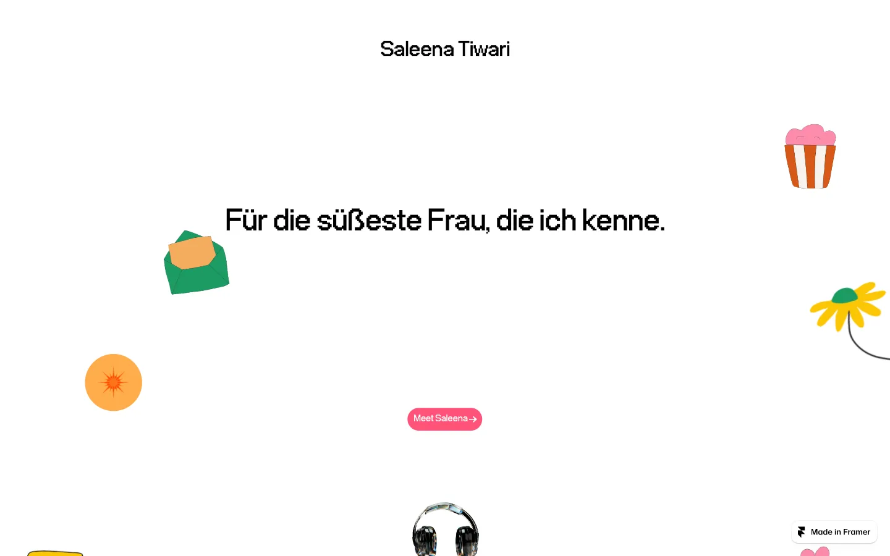
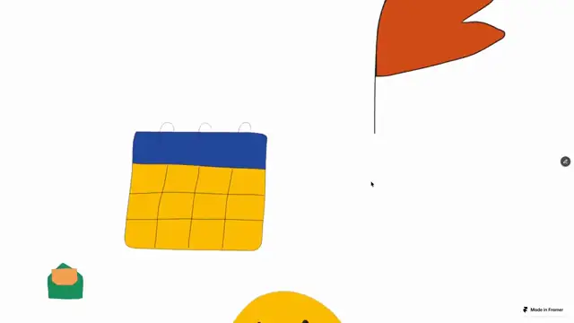
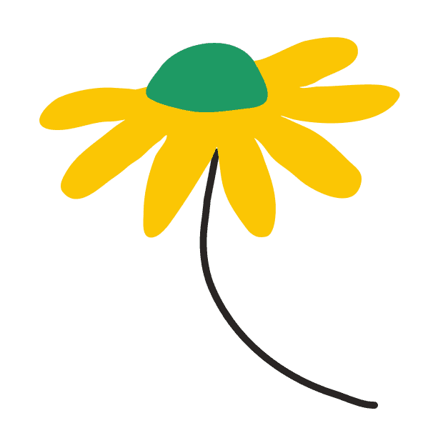
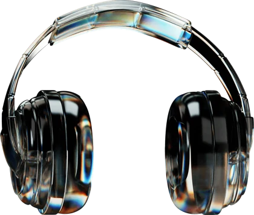

Case study / 012
Making Saleena: a page in 3 languages
A one-page site I made as a gift. German, Nepali and English share the page, and the drawings scattered across it open when you point at them.
A line about her goes here.
A line about her goes here.
A line about her goes here.
A line about her goes here.
A line about her goes here.
A line about her goes here.
A line about her goes here.
A line about her goes here.
- spin 8 s a turn, linear
- record at 0°
- turning
- card 220 ms ease, 8 px → 0, opacity 0 → 1
- open none
01
Intro
This one was made for a single reader. It was a gift, made in Framer, about distance: how far apart you can be from someone, and how little that changes.
It's a single page, on white, with a lot of room. Small drawings float around the text: a popcorn box, a flower, headphones, a record. 9 of the things on it open a card when you point at them, and a phone gets a different page altogether.
The outcome: saleena.framer.website

Built with. Framer for the page. On top of it, custom React code components: the reveal in plain CSS, the image effect and the language switch in GSAP.
02
3 languages, 1 page
The headline is German. Under it is a line in Nepali, in Devanagari. Then the page moves into English for the long middle, and German comes back near the end, twice: once in a large line, and once in the last paragraph.
Für die süßeste Frau, die ich kenne.
For the sweetest woman I know. Headlines are set in PP NeueBit Bold, a pixel face, and the body in PP Neue Montreal. The pixel face gives the page its handmade, screen-native feel, and the generous white around it keeps 3 scripts from crowding each other.
Below is the whole page as a map, 13,213 pixels tall on a laptop, with every block of text sorted by its language and drawn at its real place.

Colours. Text in #111111 on white. #FFD1DC for the pale pink pills, and #FF5279 for its only button, Meet Saleena.
03
Things to find
9 things on the page open a card when you point at them. 8 are the drawings in Fig. 1, and the 9th is a photograph. The card is the same each time: a pale pink pill that says "Click to Close", and under it a short line about her.
It rises 8 pixels and fades in, both over 220 milliseconds on the browser's standard ease, and hangs just below the drawing so the two read as one object. Move away and it drops back.
The record also turns, once every 8 seconds, at a steady speed. The moment you point at it, the spin stops where it is, so the card always opens on a still drawing, and it carries on from the same angle when you leave.
A line about her goes here.
- angle 0°
- opacity 0.00
- lift 8.0 px
- transition 220 ms ease
- pill #FFD1DC PP NeueBit Bold 26 px
- card min 307 px, radius 18, padding 10
Everything else that moves is a Framer loop: the headphones bob 32 pixels once a second, and a plane crosses the bottom of the page every 10 seconds.
04
The small screen
The page was made for a laptop, and on anything narrower it says so. Under 1,024 pixels wide, it shows a short note instead: this corner of the internet was made for a bigger screen. It's set in the same pixel face as the headlines, at 50 pixels, so even the note feels like part of the gift.
Even that note speaks 3 languages. A pill shows a flag and a code, EN to start. Tap it and the note changes to German, then Nepali, then back to English.
The change is animated with GSAP. The note is split into words, and each word sits in a span with its overflow hidden, so a word rising from 28 pixels below is cut off until it arrives. Each word takes 0.7 seconds on power3.out and starts 0.025 seconds after the one before, so the English note's 24 words take 1.275 seconds to land.


- EN · 24 words
- stagger 0.025 s
- each 0.7 s, y 28 → 0 px, opacity 0 → 1
- last word lands at 1.275 s
- t 0.000 s
Type. PP NeueBit Bold at 50 pixels, in a column 468 pixels wide at most. On a 390 pixel phone it gets 333. The headphones in the corner bob just as they do on the big page.
05
The image effect
The photographs sit in a second component: an image that answers the pointer. It has 6 modes, tilt, depth, skew, flip, distort and float, and each one is a GSAP tween on the image or on an SVG filter.
The page uses tilt for all 8 photographs: up to 14 degrees each way at a perspective of 1,200 pixels, a zoom to 1.04, and back to flat over 0.3 seconds when you leave. The glare is switched off.
06
Conclusion
A gift doesn't need to explain itself to anyone but the person it's for. That freed the page to do things a portfolio piece usually can't: speak 3 languages at once, hide most of what it has to say behind drawings, and meet a phone with a note of its own, in all 3.